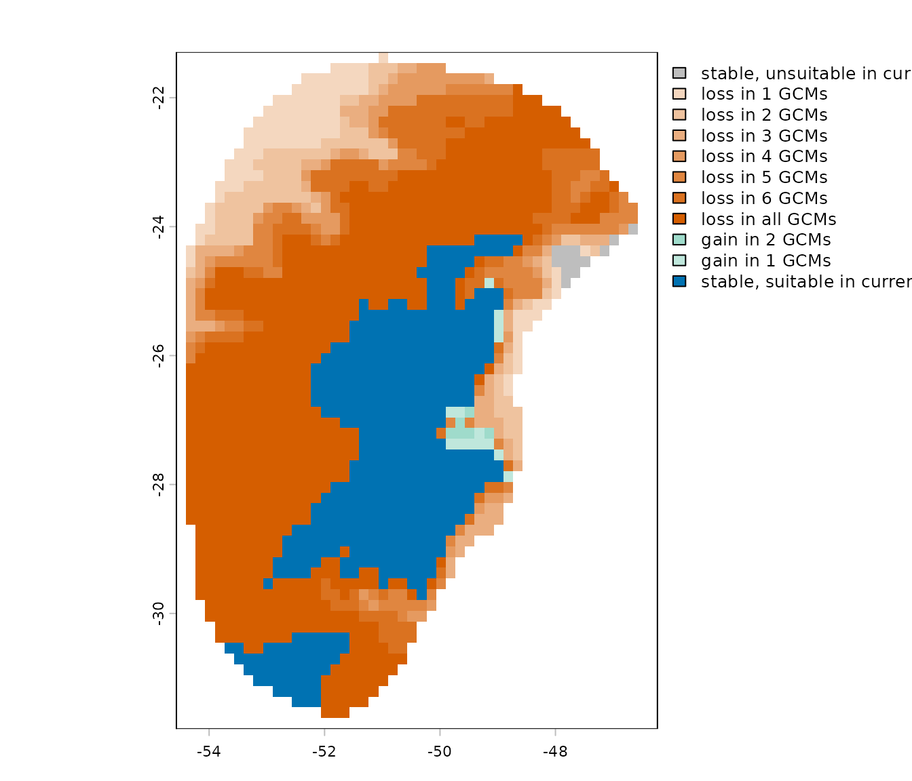

8. Example of Projections Using CHELSA Data
Source:vignettes/projections_chelsa.Rmd
projections_chelsa.RmdSummary
- Description
- Getting ready
- Naming files for projections
- Getting variables
- Organizing variables
- Data preparation for model projections
- Projecting models
- Detecting changes: Past vs present
Description
In the vignette “Project models to
multiple scenarios”, we show how to project models to multiple
scenarios at once using future scenarios available in WorldClim.
To organize WorldClim we previously used the function
(organize_future_worldclim()), and we will need to do
something similar for data from other databases, for instance, from CHELSA.
We need a root directory containing folders representing different scenarios, and each of these folders stores raster variables. At the first level, inside the root, folders should correspond to distinct time periods (e.g., future years like 2070 or past periods such as LGM). Within each period folder, if applicable, sub-folders can contain data to represent emission scenarios (e.g., ssp126 and ssp585). Finally, within each emission scenario or time period folder, a separate folder for each General Circulation Model (GCM) should be included (e.g., BCC-CSM2-MR and MIROC6).
Organizing information this way can be a little tedious, but here we will show how to do it. This will make possible to project models using scenarios available in different sources. We will use variables from CHELSA representing scenarios for the Last Glacial Maximum (LGM, ~21,000 year ago).
WARNING: In November 2025, CHELSA updated its website and LGM variables have not been listed the way they were before. We keep this example because the layers are still available to download using the code below, and users can still see how the function handles past projections. Please be aware that the download links for these variables might change in the future, and the code will stop working.
Getting ready
At this point it is assumed that kuenm2 is installed (if
not, see the Main guide). Load
kuenm2 and any other required packages, and define a
working directory (if needed).
Note: functions from other packages (i.e., not from base R or
kuenm2) used in this guide will be displayed as
package::function().
# Load packages
library(kuenm2)
library(terra)
# Current directory
getwd()
# Define new directory
#setwd("YOUR/DIRECTORY") # uncomment and modify if setting a new directoryNaming files for projections
To start, climate variables must be saved as separate TIF files, one file per scenario. File names should follow a consistent pattern that clearly indicates the time period, GCM, and, for future scenarios, the emission scenario (SSP). In addition, variables should have the same name across all scenarios. For example:
- A file representing past conditions for the “LGM” period using the “MIROC6” GCM could be named “Past_LGM_MIROC6.tif”.
- A file representing future conditions for the period “2081–2100” under the emission scenario “ssp585” and the GCM “ACCESS-CM2” could be named “Future_2081-2100_ssp585_ACCESS-CM2.tif”.
- Variable names in all files representing scenarios must match (e.g., bio1, bio2, etc.). Units in which variables are measured should match among all scenarios.
Let’s see how to achieve this in practice.
Getting variables
Downloading LGM variables
The first step is downloading raster layers representing LGM conditions. You can download the files directly using the links we create below, or following the script.
# Define variables to download
var_to_use <- c("BIO_01", "BIO_07", "BIO_12", "BIO_15")
# Define GCMs
gcms <- c("CCSM4", "CNRM-CM5", "FGOALS-g2", "IPSL-CM5A-LR", "MIROC-ESM",
"MPI-ESM-P", "MRI-CGCM3")
# Create a grid combining variables and GCMs
g <- expand.grid("gcm" = gcms, "var" = var_to_use)
# Create links to download
l <- do.call(paste, c(g, sep = "_"))
l <- paste0("https://os.zhdk.cloud.switch.ch/chelsav1/pmip3/bioclim/CHELSA_PMIP_",
l, ".tif")
# See links
head(l)
#> [1] "https://os.zhdk.cloud.switch.ch/chelsav1/pmip3/bioclim/CHELSA_PMIP_CCSM4_BIO_01.tif"
#> [2] "https://os.zhdk.cloud.switch.ch/chelsav1/pmip3/bioclim/CHELSA_PMIP_CNRM-CM5_BIO_01.tif"
#> [3] "https://os.zhdk.cloud.switch.ch/chelsav1/pmip3/bioclim/CHELSA_PMIP_FGOALS-g2_BIO_01.tif"
#> [4] "https://os.zhdk.cloud.switch.ch/chelsav1/pmip3/bioclim/CHELSA_PMIP_IPSL-CM5A-LR_BIO_01.tif"
#> [5] "https://os.zhdk.cloud.switch.ch/chelsav1/pmip3/bioclim/CHELSA_PMIP_MIROC-ESM_BIO_01.tif"
#> [6] "https://os.zhdk.cloud.switch.ch/chelsav1/pmip3/bioclim/CHELSA_PMIP_MPI-ESM-P_BIO_01.tif"
# Create a directory to save the raw variables
raw_past_chelsa <- file.path(tempdir(), "Raw_past") # Here, in a temporary directory
dir.create(raw_past_chelsa)
# Download files and save in the Raw_past directory
options(timeout = 300) # To avoid errors with timeout
sapply(l, function(i) {
downfile <- file.path(raw_past_chelsa, basename(i))
# Download only if the file has not been downloaded yet
if(!file.exists(downfile)) {
download.file(url = i, destfile = downfile, method = "curl")
}
}) # It will take a while
#Check the files in the Raw_past
list.files(raw_past_chelsa)
#> [1] "CHELSA_PMIP_CCSM4_BIO_01.tif" "CHELSA_PMIP_CCSM4_BIO_07.tif"
#> [3] "CHELSA_PMIP_CCSM4_BIO_12.tif" "CHELSA_PMIP_CCSM4_BIO_15.tif"
#> [5] "CHELSA_PMIP_CNRM-CM5_BIO_01.tif" "CHELSA_PMIP_CNRM-CM5_BIO_07.tif"
#> [7] "CHELSA_PMIP_CNRM-CM5_BIO_12.tif" "CHELSA_PMIP_CNRM-CM5_BIO_15.tif"
#> [9] "CHELSA_PMIP_FGOALS-g2_BIO_01.tif" "CHELSA_PMIP_FGOALS-g2_BIO_07.tif"
#> [11] "CHELSA_PMIP_FGOALS-g2_BIO_12.tif" "CHELSA_PMIP_FGOALS-g2_BIO_15.tif"
#> [13] "CHELSA_PMIP_IPSL-CM5A-LR_BIO_01.tif" "CHELSA_PMIP_IPSL-CM5A-LR_BIO_07.tif"
#> [15] "CHELSA_PMIP_IPSL-CM5A-LR_BIO_12.tif" "CHELSA_PMIP_IPSL-CM5A-LR_BIO_15.tif"
#> [17] "CHELSA_PMIP_MIROC-ESM_BIO_01.tif" "CHELSA_PMIP_MIROC-ESM_BIO_07.tif"
#> [19] "CHELSA_PMIP_MIROC-ESM_BIO_12.tif" "CHELSA_PMIP_MIROC-ESM_BIO_15.tif"
#> [21] "CHELSA_PMIP_MPI-ESM-P_BIO_01.tif" "CHELSA_PMIP_MPI-ESM-P_BIO_07.tif"
#> [23] "CHELSA_PMIP_MPI-ESM-P_BIO_12.tif" "CHELSA_PMIP_MPI-ESM-P_BIO_15.tif"
#> [25] "CHELSA_PMIP_MRI-CGCM3_BIO_01.tif" "CHELSA_PMIP_MRI-CGCM3_BIO_07.tif"
#> [27] "CHELSA_PMIP_MRI-CGCM3_BIO_12.tif" "CHELSA_PMIP_MRI-CGCM3_BIO_15.tif"Downloading current variables
We also need the variables representing current conditions. You can download the files directly from this link, or follow the script below:
# Create directory to save the variables
present_dir <- file.path(tempdir(), "Present_raw")
dir.create(present_dir)
# Define variables to download
var_present <- c("bio1", "bio7", "bio12", "bio15")
# Create links, download and save in the Present_raw directory
l_present <- sapply(var_present, function(i){
# Create link to download
l_present_i <- paste0("https://os.zhdk.cloud.switch.ch/chelsav2/GLOBAL/climatologies/1981-2010/bio/CHELSA_",
i, "_1981-2010_V.2.1.tif")
# Donwload only if the file has not been downloaded yet
if(!file.exists(file.path(present_dir, basename(l_present_i))))
download.file(url = l_present_i,
destfile = file.path(present_dir, basename(l_present_i)),
method = "curl")
}) # This might take a while
# Check the files in the directory
list.files(present_dir)
#> [1] "CHELSA_bio1_1981-2010_V.2.1.tif" "CHELSA_bio12_1981-2010_V.2.1.tif"
#> [3] "CHELSA_bio15_1981-2010_V.2.1.tif" "CHELSA_bio7_1981-2010_V.2.1.tif"Subsetting and renaming
After downloading files, we need to combine all variables for each scenario in a single TIF file. In general, past scenarios differs only in terms of GCM, while future scenarios are also separated according to different emission scenarios (i.e., SSP1-26 and SSP5-85) and GCMs.
First, let’s combine the variables from the present scenario. To speed up the analysis in this example, we will also resample the raster layers from 30 arc-seconds to 10 arc-minutes, and crop the variables using a calibration area (provided as example data with the package). We will also rename the variables as follows “bio1”, “bio12”, “bio15”, and “bio7”.
# Import are for model calibration (M)
m <- vect(system.file("extdata", "m.gpkg",
package = "kuenm2"))
# Import present variables
present_files <- list.files(present_dir, full.names = TRUE) # List files
present_var <- rast(present_files)
# Mask variables using the calibration area (m)
present_m <- crop(present_var, m, mask = TRUE)
# Check variables names
names(present_m)
#> [1] "CHELSA_bio1_1981-2010_V.2.1" "CHELSA_bio12_1981-2010_V.2.1"
#> [3] "CHELSA_bio15_1981-2010_V.2.1" "CHELSA_bio7_1981-2010_V.2.1"
# Rename variables
names(present_m) <- c("bio1", "bio12", "bio15", "bio7")
names(present_m)
#> [1] "bio1" "bio12" "bio15" "bio7"
# Check current resolution (30arc-sec)
res(present_m)
#> [1] 0.008333333 0.008333333
# Decrease resolution to 10arc-min
present_chelsa <- aggregate(present_m, fact = 20, fun = "mean")
# Save processed raster
dir_current <- file.path(tempdir(), "Current_CHELSA")
dir.create(dir_current)
writeRaster(present_chelsa,
filename = file.path(dir_current, "Current_CHELSA.tif"))Now, let’s do the same with variables representing LGM conditions:
# Import LGM variables
lgm_files <- list.files(raw_past_chelsa, full.names = TRUE) # List files
lgm_var <- rast(lgm_files)
# Mask variables using the calibration area (m)
lgm_m <- crop(lgm_var, m, mask = TRUE)
# Decrease resolution to 10arc-min
lgm_chelsa <- aggregate(lgm_m, fact = 20, fun = "mean")
# Check variables names
names(lgm_chelsa)
#> [1] "CHELSA_PMIP_CCSM4_BIO_01" "CHELSA_PMIP_CCSM4_BIO_07"
#> [3] "CHELSA_PMIP_CCSM4_BIO_12" "CHELSA_PMIP_CCSM4_BIO_15"
#> [5] "CHELSA_PMIP_CNRM-CM5_BIO_01" "CHELSA_PMIP_CNRM-CM5_BIO_07"
#> [7] "CHELSA_PMIP_CNRM-CM5_BIO_12" "CHELSA_PMIP_CNRM-CM5_BIO_15"
#> [9] "CHELSA_PMIP_FGOALS-g2_BIO_01" "CHELSA_PMIP_FGOALS-g2_BIO_07"
#> [11] "CHELSA_PMIP_FGOALS-g2_BIO_12" "CHELSA_PMIP_FGOALS-g2_BIO_15"
#> [13] "CHELSA_PMIP_IPSL-CM5A-LR_BIO_01" "CHELSA_PMIP_IPSL-CM5A-LR_BIO_07"
#> [15] "CHELSA_PMIP_IPSL-CM5A-LR_BIO_12" "CHELSA_PMIP_IPSL-CM5A-LR_BIO_15"
#> [17] "CHELSA_PMIP_MIROC-ESM_BIO_01" "CHELSA_PMIP_MIROC-ESM_BIO_07"
#> [19] "CHELSA_PMIP_MIROC-ESM_BIO_12" "CHELSA_PMIP_MIROC-ESM_BIO_15"
#> [21] "CHELSA_PMIP_MPI-ESM-P_BIO_01" "CHELSA_PMIP_MPI-ESM-P_BIO_07"
#> [23] "CHELSA_PMIP_MPI-ESM-P_BIO_12" "CHELSA_PMIP_MPI-ESM-P_BIO_15"
#> [25] "CHELSA_PMIP_MRI-CGCM3_BIO_01" "CHELSA_PMIP_MRI-CGCM3_BIO_07"
#> [27] "CHELSA_PMIP_MRI-CGCM3_BIO_12" "CHELSA_PMIP_MRI-CGCM3_BIO_15"Note that file names contain the information on the GCM. The trick here is using these patterns for grouping the variables:
# In each iteration, 'i' is a GCM
lgm_by_gcm <- lapply(gcms, function(i){
# Subset variables that belong to GCM i
lgm_gcm_i <- lgm_chelsa[[grepl(i, names(lgm_chelsa))]]
# Rename variables
names(lgm_gcm_i) <- c("bio1", "bio7", "bio12", "bio15")
return(lgm_gcm_i)
})
names(lgm_by_gcm) <- gcmsOne important thing to note is that variables from LGM have different units compared to the current ones. In the current time, bio_1 have values in ºC, while in the LGM it has values in K * 10. bio_7 have values in ºC in the current time and in ºC * 10 in LGM. The current precipitation variables are in millimeters (mm) or percentage of variation (bio_15), while in the LGM they are in mm * 10 or % * 10.
# Check values of variables in present
#> minmax(present_chelsa[[c("bio1", "bio7", "bio12", "bio15")]])
#> bio1 bio7 bio12 bio15
#> min 12.87700 10.11300 1211.605 10.32925
#> max 24.70025 21.06125 3063.049 70.45125
# Check values of variables in LGM (CCSM4)
minmax(lgm_by_gcm$CCSM4)
#> bio1 bio7 bio12 bio15
#> min 2822.425 173.5125 10710.62 86.9125
#> max 2946.758 219.7700 23159.20 659.0025We need to convert these variables so they have the same units as the current variables:
# Fixing units in loop
lgm_fixed_units <- lapply(lgm_by_gcm, function(x) {
x$bio1 <- (x$bio1 / 10) - 273 # Divide by 10 and subtracts -273
x$bio7 <- x$bio7 / 10 # Divide by 10
x$bio12 <- x$bio12 / 10 # Divide by 10
x$bio15 <- x$bio15 / 10 # Divide by 10
return(x)
})
# Check units
minmax(lgm_fixed_units$CCSM4)
#> bio1 bio7 bio12 bio15
#> min 9.24250 17.35125 1071.062 8.69125
#> max 21.67575 21.97700 2315.920 65.90025Now that we have the variables for LGM grouped by GCMs, with names and units fixed accordingly, we can write the files to disk. Remember that file names must include the time period (LGM) and the GCM of each scenario:
# Create directory to save processed lgm variables
dir_lgm <- file.path(tempdir(), "LGM_CHELSA")
dir.create(dir_lgm)
# Processing in loop
lapply(names(lgm_fixed_units), function(i) {
# Subset SpatRaster from GCM i
r_i <- lgm_fixed_units[[i]]
# Name the file with the Period (LGM) and GCM (i)
filename_i <- paste0("CHELSA_LGM_", i, ".tif")
# Write Raster
writeRaster(r_i, filename = file.path(dir_lgm, filename_i))
})Organizing variables
At this points we have:
- The variables stored as TIF files, one file per scenario.
- The names of files containing patterns to identify the time periods and GCMS.
- The variable names (bio1, bio2, etc.) matching across scenarios.
Now, we can use the function organize_for_projection()
to organize the files in the specific hierarchical manner compatible
with kuenm2. The function requires:
-
present_file,past_filesand/orfuture_files: character vector with the full path to the files for the scenarios of interest. When listing these files, is important to setfull.names = TRUEinlist.files(). -
past_periodand/orfuture_period: character vector specifying the time periods in past and/or future, respectively. Examples of past periods are LGM and MID. Examples of future periods include 2061-2080 or 2100. Remember that period ID needs to be part of file names. -
past_gcmand/orfuture_gcm: character vector specifying GCMS in past and/or future, respectively. Examples of GCMS are CCSM4 and FGOALS-g2. Remember that GCMs need to be part of file names. -
future_pscen: character vector specifying emission scenarios in the future. Examples of scenario names are ssp126 and ssp585. Remember that scenarios need to be part of file names. -
variables_namesormodels: a character vector with the variable names or afitted_modelobject (from where the variables used in the model will be extracted).
The function also allows to use a spatial object
(SpatVector, SpatRaster, or
SpatExtent) to mask the variables, and append names of
static variables (i.e., topographic variables) to the climatic
variables.
first step is using list.files(path, full.names = TRUE)
to list the path to the files representing present and LGM conditions.
Remember, we save the processed current variables in the
present_dir directory and the LGM variables in
dir_lgm:
# Listing files in directories
present_list <- list.files(path = dir_current, pattern = "Current_CHELSA",
full.names = TRUE)
lgm_list <- list.files(path = dir_lgm, pattern = "LGM", full.names = TRUE)Let’s check the listed files to ensure they are storing the full path to the variables of each scenario:
# Check list of files with full paths
## Present
present_list # Paths can be different in distinct computers
#> "Local\\Temp\\Current_CHELSA.tif"
# Past
lgm_list # Paths can be different in distinct computers
#> [1] "Local\\Temp\\CHELSA_LGM_CCSM4.tif"
#> [2] "Local\\Temp\\CHELSA_LGM_CNRM-CM5.tif"
#> [3] "Local\\Temp\\CHELSA_LGM_FGOALS-g2.tif"
#> [4] "Local\\Temp\\CHELSA_LGM_IPSL-CM5A-LR.tif"
#> [5] "Local\\Temp\\CHELSA_LGM_MIROC-ESM.tif"
#> [6] "Local\\Temp\\CHELSA_LGM_MPI-ESM-P.tif"
#> [7] "Local\\Temp\\CHELSA_LGM_MRI-CGCM3.tif"After checking files, we are ready to organize them:
# Create a directory to save the variables
# Here, in a temporary directory. Change to your work directory in your computer
out_dir <- file.path(tempdir(), "Projection_variables")
# Organizing files the way it is needed
organize_for_projection(output_dir = out_dir,
variable_names = c("bio1", "bio7", "bio12", "bio15"),
present_file = present_list,
past_files = lgm_list,
past_period = "LGM",
past_gcm = c("CCSM4", "CNRM-CM5", "FGOALS-g2",
"IPSL-CM5A-LR", "MIROC-ESM", "MPI-ESM-P",
"MRI-CGCM3"),
resample_to_present = TRUE,
overwrite = TRUE)
#>
#> Variables successfully organized in directory:
#> /tmp/Rtmp0oibf5/Projection_variablesWe can check the files structured hierarchically in nested folders
using the dir_tree() function from the fs
package:
# Install package if necessary
if(!require("fs")) {
install.packages("fs")
}
fs::dir_tree(out_dir)
#> Local\Temp\Projection_variables
#> ├── Past
#> │ └── LGM
#> │ ├── CCSM4
#> │ │ └── Variables.tif
#> │ ├── CNRM-CM5
#> │ │ └── Variables.tif
#> │ ├── FGOALS-g2
#> │ │ └── Variables.tif
#> │ ├── IPSL-CM5A-LR
#> │ │ └── Variables.tif
#> │ ├── MIROC-ESM
#> │ │ └── Variables.tif
#> │ ├── MPI-ESM-P
#> │ │ └── Variables.tif
#> │ └── MRI-CGCM3
#> │ └── Variables.tif
#> └── Present
#> └── Variables.tifAfter organizing variables, the next step is to create the
prepared_projection object.
But before this, let’s import a fitted_model object
provided as example data in kuenm2. This object was created
in a process that used current variables from CHELSA. For more
information check the vignettes about data
preparation, model calibration
and model exploration.
# Load the object with fitted models
data(fitted_model_chelsa, package = "kuenm2")Data preparation for model projections
Now, let’s prepare data for model projections to multiple scenarios. We need the paths to the folders where the raster files are stored.
In addition to storing the paths to the variables for each scenario,
the function verifies if all variables used to fit the final models are
present across all scenarios. To perform this check, you need to provide
either the fitted_models object you intend to use for
projection or simply the variable names. We strongly suggest using the
fitted_models object to minimize errors.
We also need to provide information so the function can identify time periods, SSPs, and GCMs (no SSPs in this example).
# Define present_dir and past_dir
in_dir_present <- file.path(out_dir, "Present")
in_dir_past <- file.path(out_dir, "Past")
# Prepare projections using fitted models to check variables
pr <- prepare_projection(models = fitted_model_chelsa,
present_dir = in_dir_present, # Directory with present variables
past_dir = in_dir_past,
past_period = "LGM",
past_gcm = c("CCSM4", "CNRM-CM5", "FGOALS-g2",
"IPSL-CM5A-LR", "MIROC-ESM", "MPI-ESM-P",
"MRI-CGCM3"),
future_dir = NULL, # NULL because we won't project to the Future
future_period = NULL,
future_pscen = NULL,
future_gcm = NULL) When we print the projection_data object, it summarizes
all scenarios we will predict to, and shows the root directory where the
files are stored:
pr
#> projection_data object summary
#> ==============================
#> Variables prepared to project models for Present and Past
#> Past projections contain the following periods and GCMs:
#> - Periods: LGM
#> - GCMs: CCSM4 | CNRM-CM5 | FGOALS-g2 | IPSL-CM5A-LR | MIROC-ESM | MPI-ESM-P | MRI-CGCM3
#> All variables are located in the following root directory:
#> Local/Temp/Projection_variablesProjecting models
After preparing the data, we can use the
project_selected() function to project selected models
across the scenarios specified before. For a comprehensive explanation
of this step, please see the Project
models to multiple scenarios vignette.
# Create a folder to save projection results
# Here, in a temporary directory
out_dir_projections <- file.path(tempdir(), "Projection_results/chelsa")
dir.create(out_dir_projections, recursive = TRUE)
# Project selected models to multiple scenarios
p <- project_selected(models = fitted_model_chelsa,
projection_data = pr,
out_dir = out_dir_projections,
write_replicates = TRUE,
progress_bar = FALSE, # Do not print progress bar
overwrite = TRUE)
# Import mean of each projected scenario
p_mean <- import_results(projection = p, consensus = "mean")
# Plot all scenarios
terra::plot(p_mean, cex.main = 0.8)
Detecting changes: Past vs present
When projecting a model to different temporal scenarios (past or future), changes in suitable areas can be classified into three categories relative to the current baseline: gain, loss and stability. The interpretation of these categories depends on the temporal direction of the projection.
When projecting to future scenarios:
- Gain: Areas currently unsuitable become suitable in the future.
- Loss: Areas currently suitable become unsuitable in the future.
- Stability: Areas remain the same in the future, suitable or unsuitable.
When projecting to past scenarios:
- Gain: Areas unsuitable in the past are suitable in the present.
- Loss: Areas suitable in the past are unsuitable in the present.
- Stability: Areas remain the same in the present, suitable or unsuitable.
These outcomes may vary across different General Circulation Models (GCMs) within each time scenario (e.g., various Shared Socioeconomic Pathways (SSPs) for the same period).
The projection_changes() function summarizes the number
of GCMs predicting gain, loss, and stability for each time scenario.
By default, this function writes the summary results to disk (unless
write_results is set to FALSE), but it does
not save binary layers for individual GCMs. In the example below, we
demonstrate how to configure the function to return the raster layers
with changes and write the binary results to disk.
Here, we present an example of detected changes from LGM to current conditions.
# Run function to detect changes
changes <- projection_changes(model_projections = p, consensus = "mean",
output_dir = out_dir_projections,
write_bin_models = TRUE, # Write individual binary results
return_raster = TRUE, overwrite = TRUE)
# Set colors
summary_with_colors <- colors_for_changes(changes_projections = changes)
# Plot
terra::plot(summary_with_colors$Summary_changes)
In this example, we can see that the species has lost a lot of its suitable area when comparing LGM to present-day conditions. This is supported by the high agreement among GCMs.